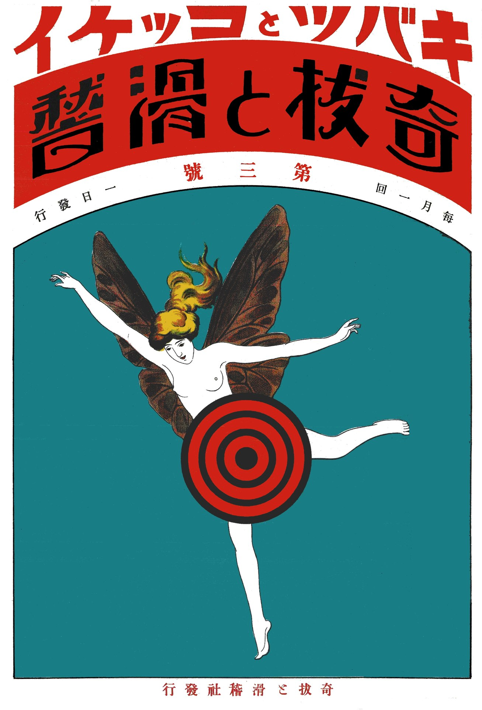

What becomes a target of censorship? And are the targets of censorship becoming of a redactionary modernism?

News


Libraries were never warehouses of books ... They have always been and always will be centres of learning.” --- Robert Darnton
Redacted
The Archives of Censorship in Transwar Japan